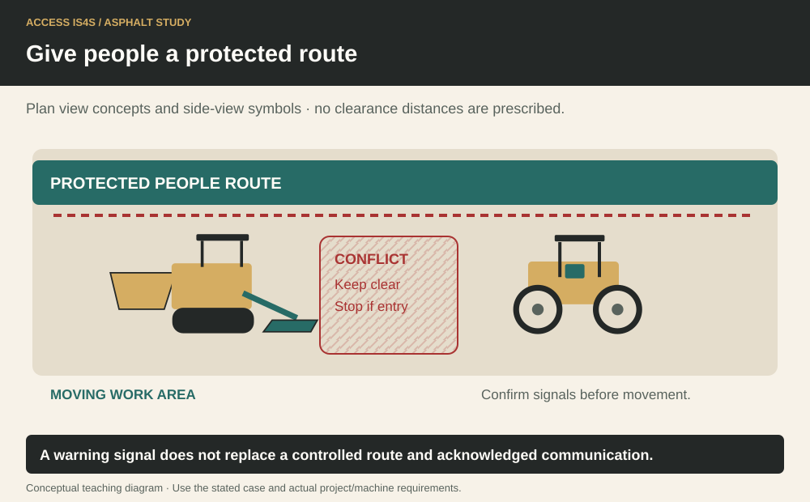
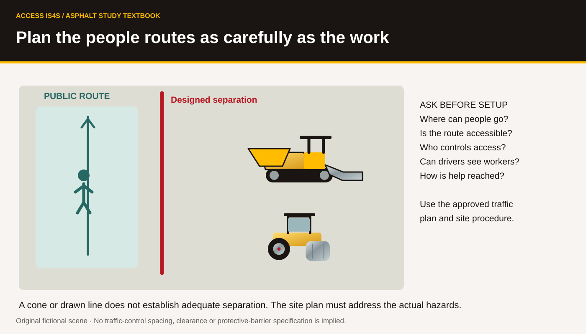

Study chapter · Outline B7
Safety and traffic control procedures
Traffic control is a planned system for road users, workers and equipment. Signs, devices, traffic control persons (TCPs), traffic assistants and communication have defined roles. A paving learner must understand that system even when they are not assigned to control traffic. At a community entrance, include pedestrians, cyclists, mobility needs and emergency access in the planning questions.
Learning step 1
Traffic control procedures (TCP) Certification
WorkSafeBC Part 18 defines traffic-control training and responsibilities. Section 18.6.2 addresses a traffic-control-person training program, including knowledge and practical competency assessment; the employer must meet the applicable qualification requirements. A classroom paving chapter does not issue that qualification. Confirm the accepted training program and the actual person’s current evidence before assigning TCP duties.
A traffic assistant has a different role and workplace training requirements under 18.6.3. Do not relabel an unqualified person a TCP because the crew needs help. Course completion records, employer orientation and site-specific instruction serve different purposes; all applicable requirements must be met.
Give people a protected route

Learning step 2
Review TCP training content
Traffic-control training develops recognition of hazards, the required plan, setup and removal of devices, safe positioning and escape routes, signs/signals, communication and responses to changing conditions. The B.C. Traffic Management Manual for Work on Roadways provides the roadwork framework, used with current regulation and road-authority requirements.
The learner reads the approved plan’s location, revision, work activity and traffic arrangement before interpreting an individual sign. A diagram from a manual is a typical arrangement with conditions, not a ready-made plan for every site. Conditions such as sight distance, road speed, intersections, queues, pedestrians and lighting affect the actual plan.
Learning step 3
Review TCP regulations
The number and positioning of people and devices follow the risk assessment, applicable requirements and approved traffic-control arrangement. There is no universal answer of one or two TCPs for all paving work. Under 18.8, the position must be identified as safe in the risk assessment; escape and approach visibility matter. Equipment is kept clean and serviceable. Precise, deliberate signals and effective communication between multiple TCPs are required by the relevant provisions.
The paver crew must not change the traffic arrangement informally when production slows or a truck arrives. Communicate the changing need to the responsible person, maintain the controls and wait for an authorized adjustment. A queue extending beyond the planned warning arrangement is a changed condition requiring action, not a reason to hurry signals.
Plan the people routes as carefully as the work

Try it and explain your thinking
Explain and apply the idea
Compare TCP and traffic-assistant training requirements using retained Part 18 sections 18.6.2–18.6.3. Identify what qualification this chapter does not issue.
Skills you use: Reading, Writing.
Calculate and check the result
Annotate the work-zone concept with questions about warning, transition, work area, public route and return to normal traffic. Explain why no spacing can be taken from it.
Skills you use: Problem solving, Communication.
Save a version register for the worked case, then role-play a revision handover
Save a version register for the worked case, then role-play a revision handover. Ask the listener to find the current entrance instruction and improve the brief if they cannot.
Skills you use: Digital, Collaboration, Adaptability, Creativity and innovation.
Show the skill in supervised practice
Machine/model/serial or classroom case: __________ · Manual/procedure and revision: __________ · Date/location: __________ · Learner/observer: __________
Record each criterion as 0—not yet demonstrated, 1—with task-solving support, or 2—independently under the stated conditions. Mark unobserved criteria separately; do not convert missing opportunity into a zero. The assessor determines the required repeat practice and applicable qualification requirements. A critical failure means hold, correction and reassessment regardless of the numerical result. Use safe simulations for classroom reasoning; actual operation requires the selected equipment, approved conditions and competent supervision.
| What the observer checks | Result | Evidence |
|---|---|---|
| Critical: Safe access, surroundings and communication maintained. | Pass / hold | Observation: __________________ |
| Critical: Required energy, heat, movement and public-access controls maintained for the actual task. | Pass / hold | Observation: __________________ |
| Check the actual site plan and role qualifications before road-side observation. | 0 / 1 / 2 | Evidence/help: ________________ |
| Observe correct interpretation, staying within assigned duties and communication of a changed condition. | 0 / 1 / 2 | Evidence/help: ________________ |
| Where TCP competence is assessed, use the approved training/assessment program and qualified assessor, not this classroom record alone. | 0 / 1 / 2 | Evidence/help: ________________ |
Actual conditions and support: __________________________
Feedback, next practice and authorized release/status: __________________________
Sources and further reading
- SkilledTradesBC. (2016). Asphalt Paving/Laydown Technician program outline, B7, printed p. 33; source PDF pp. 35–35.
- WorkSafeBC. (Web snapshot: October 30, 2026). OHS Regulation, Part 18: Traffic Control. Open publication.
- WorkSafeBC. (Web snapshot: October 30, 2026). OHS Guidelines, Part 18. Open publication.
- BC Ministry of Transportation and Infrastructure. (2020). Traffic Management Manual for Work on Roadways. Open publication.
- Province of British Columbia. (Web snapshot: October 30, 2026). Traffic Management Manual Updates. Open publication.
Figure-specific pages, editions and original contributors are credited beside each image. Current project requirements and the matching machine instructions determine practical use.